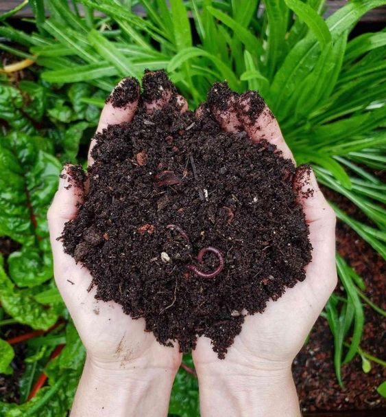

Compostaje: Un Camino hacia la Sostenibilidad.
El compostaje es una práctica milenaria que transforma los desechos orgánicos en un valioso recurso para el suelo. A través de un proceso natural de descomposición, restos de alimentos, hojas secas y otros materiales orgánicos se convierten en compost, un abono rico en nutrientes. Este artículo explorará qué es el compostaje, sus beneficios, cómo realizarlo en casa y su impacto ecológico y social.
¿Qué es el Compostaje?
El compostaje es el proceso biológico de descomposición y reciclaje de materia orgánica, como restos de comida y residuos de jardín, en un material parecido al humus. Este proceso es llevado a cabo por microorganismos como bacterias y hongos, así como por lombrices y otros invertebrados, que descomponen la materia orgánica en presencia de oxígeno.
Beneficios del Compostaje
- Ahorro de Costos: El compostaje reduce la necesidad de comprar fertilizantes comerciales, lo que puede resultar en ahorros significativos para los hogares y las comunidades.
- Educación y Conciencia Ambiental: El compostaje puede servir como una herramienta educativa, enseñando a los niños y adultos sobre la importancia de la gestión de residuos y la sostenibilidad.
- Fomento de la Comunidad: Muchas comunidades tienen programas de compostaje que promueven la participación ciudadana y fortalecen los lazos comunitarios.
¿Cómo Hacer Compost en Casa?
Materiales Necesarios
- Contenedor de Compostaje: Puede ser un contenedor comprado o una estructura hecha en casa. Lo importante es que tenga una buena ventilación y esté protegido de la lluvia excesiva.
- Residuos Orgánicos: Se dividen en "verdes" y "marrones". Los residuos verdes incluyen restos de frutas y verduras, posos de café y recortes de césped. Los residuos marrones incluyen hojas secas, ramas pequeñas, y papel sin tintar.
Pasos para el Compostaje
- Preparar el Contenedor: Coloca una capa de material marrón en el fondo del contenedor.
- Añadir Residuos: Alterna capas de residuos verdes y marrones. Asegúrate de que las capas verdes no sean demasiado gruesas para evitar malos olores.
- Mantener el Compost: Revuelve la mezcla cada pocas semanas para proporcionar oxígeno y acelerar el proceso de descomposición. Mantén el compost húmedo pero no empapado.
- Esperar y Utilizar: Dependiendo de las condiciones, el compost estará listo en unos meses. Sabrás que está listo cuando tenga un color oscuro, una textura desmenuzable y un olor a tierra.
Impacto Ecológico y Social del Compostaje
El compostaje no solo reduce la cantidad de residuos sólidos en los vertederos, sino que también ayuda a combatir el cambio climático al disminuir la emisión de gases de efecto invernadero. Además, promueve la agricultura sostenible al reducir la dependencia de fertilizantes químicos y mejorar la salud del suelo. A nivel social, el compostaje puede ser una actividad comunitaria que une a las personas en torno a un objetivo común de sostenibilidad. También sirve como una herramienta educativa poderosa para enseñar a las futuras generaciones sobre la importancia de la gestión de residuos y la protección del medio ambiente.
Conclusión
El compostaje es una práctica simple y efectiva que puede tener un impacto significativo en nuestro entorno y comunidad. Al convertir los residuos orgánicos en un recurso valioso, no solo mejoramos la salud de nuestros suelos y plantas, sino que también contribuimos a un planeta más limpio y sostenible. Así que, ¡anímate a comenzar tu propio compostaje en casa y sé parte del cambio hacia un futuro más verde!